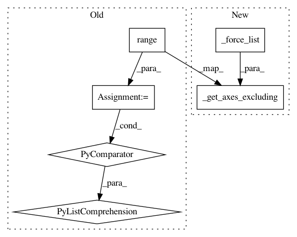

2e7d63a19355f8d9e414b1d1eef24475a7b63a14,python/test/function/test_group_normalization.py,,ref_group_normalization,#Any#Any#Any#Any#Any#Any#Any#Any#,7
Before Change
else:
ignore_axes = [batch_axis, channel_axis]
axes = tuple([i for i in range(len(shape)) if i not in ignore_axes])
x_mean = tmp.mean(axis=axes, keepdims=True)
x_std = tmp.std(axis=axes, keepdims=True)
After Change
tmp = x.reshape(shape).copy()
ignore_axes = _force_list(batch_axis) + [channel_axis, ]
axes = tuple(_get_axes_excluding(len(shape), ignore_axes))
x_mean = tmp.mean(axis=axes, keepdims=True)
x_std = tmp.std(axis=axes, keepdims=True)
In pattern: SUPERPATTERN
Frequency: 3
Non-data size: 6
Instances
Project Name: sony/nnabla
Commit Name: 2e7d63a19355f8d9e414b1d1eef24475a7b63a14
Time: 2019-05-14
Author: Akio.Hayakawa@sony.com
File Name: python/test/function/test_group_normalization.py
Class Name:
Method Name: ref_group_normalization
Project Name: sony/nnabla
Commit Name: 2e7d63a19355f8d9e414b1d1eef24475a7b63a14
Time: 2019-05-14
Author: Akio.Hayakawa@sony.com
File Name: python/test/function/test_instance_normalization.py
Class Name:
Method Name: ref_instance_normalization
Project Name: sony/nnabla
Commit Name: 2e7d63a19355f8d9e414b1d1eef24475a7b63a14
Time: 2019-05-14
Author: Akio.Hayakawa@sony.com
File Name: python/test/function/test_layer_normalization.py
Class Name:
Method Name: ref_layer_normalization